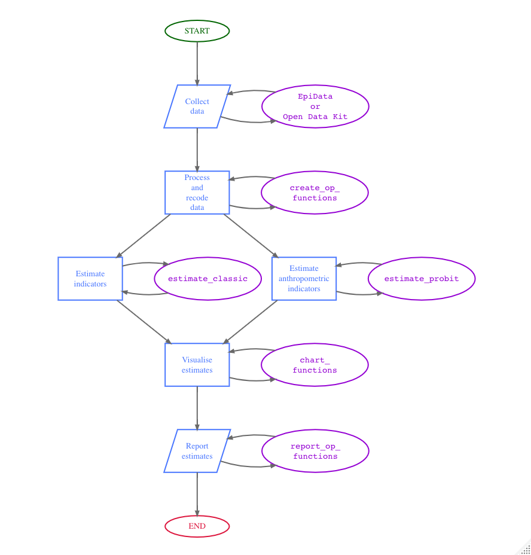

HelpAge International, VALID International, and Brixton Health, with financial assistance from the Humanitarian Innovation Fund (HIF), have developed a Rapid Assessment Method for Older People (RAM-OP) that provides accurate and reliable estimates of the needs of older people. The method uses simple procedures, in a short time frame (i.e. about two weeks including training, data collection, data entry, and data analysis), and at considerably lower cost than other methods. The RAM-OP method is based on the following principles:
Use of a familiar “household survey” design employing a two-stage cluster sample design optimised to allow the use of a small primary sample (m ≥ 16 clusters) and a small overall (n ≥ 192) sample.
Assessment of multiple dimensions of need in older people (including prevalence of global, moderate and severe acute malnutrition) using, whenever possible, standard and well-tested indicators and question sets.
Data analysis performed using modern computer-intensive methods to allow estimates of indicator levels to be made with useful precision using a small sample size.
Installation
You can install oldr from CRAN with:
install.packages("oldr")You can install the development version of oldr from GitHub with:
if(!require(remotes)) install.packages("remotes")
remotes::install_github("rapidsurveys/oldr")Usage
This package contains functions that support in the data processing, analysis and visualisation of RAM-OP survey datasets collected using the standard RAM-OP survey questionnaire.
The figure below illustrates the RAM-OP workflow and indicates which functions in the oldr package support which particular step in the process.

For a more detailed description of the RAM-OP survey, read the RAM-OP manual.
Citation
If you find the oldr package useful, please cite using the suggested citation provided by a call to the citation function as follows:
citation("oldr")
#> To cite oldr in publications use:
#>
#> Mark Myatt, Ernest Guevarra, Pascale Fritsch, Katja Siling (2024).
#> _oldr: An Implementation of Rapid Assessment Method for Older
#> People_. doi:10.5281/zenodo.7505731
#> <https://doi.org/10.5281/zenodo.7505731>, R package version 0.1.1,
#> <https://rapidsurveys.io/oldr/>.
#>
#> A BibTeX entry for LaTeX users is
#>
#> @Manual{,
#> title = {oldr: An Implementation of Rapid Assessment Method for Older People},
#> author = {{Mark Myatt} and {Ernest Guevarra} and {Pascale Fritsch} and {Katja Siling}},
#> year = {2024},
#> note = {R package version 0.1.1},
#> url = {https://rapidsurveys.io/oldr/},
#> doi = {10.5281/zenodo.7505731},
#> }Community guidelines
Feedback, bug reports, and feature requests are welcome; file issues or seek support here. If you would like to contribute to the package, please see our contributing guidelines.
This project is released with a Contributor Code of Conduct. By contributing to this project, you agree to abide by its terms.